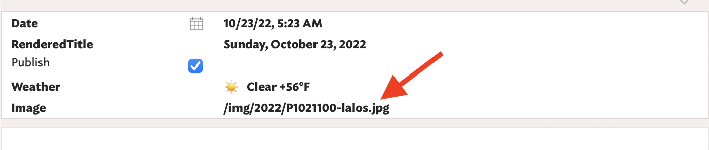

Sunday, October 23, 2022

Good morning. It's 5:20 am and I'm back from my walk with Alice. I don't know what a bobcat sounds like, but I swear I heard one, or something like it, screeching and wailing in the woods not far from us. Later, I thought I heard a deep, low growl coming from an open garage. Too dark to see, but unsettling. It raised Alice's hackles too. We increased our pace.
...your ROI on reading and understanding a concept from 500 years ago is highly likely to be exponentially greater in the long run than one presented only 5 years ago
Taylor Pearson, The Cat Furniture Problem
I've added the ability to include a "featured" image at the top of each daily container. It appears at the top of the day's page. I just enter the image path into the Image attribute of the daily container, like this:
 

I'm happy to be blogging again using Tinderbox. I'm also glad that I didn't gut an existing domain name in order to do it. For example, this could have just replaced baty.net, breaking everything there. Instead, I'm ignoring my goal of consolidation and publishing separately at baty.blog. One can never know how long I'll stick with something, but if (when?) I stop posting here, at least I don't need to step on it with whatever's next.
Development of the amazing Curio app began Twenty years ago. It's a splendid, useful app that sparks joy every time I use it.
10 rolls of HP5 from B&H runs nearly $100. Not long ago it was $72. I hardly flinch at paying many thousands of dollars for a digital camera, but then balk at a few extra dollars for film ¯\_(ツ)_/¯